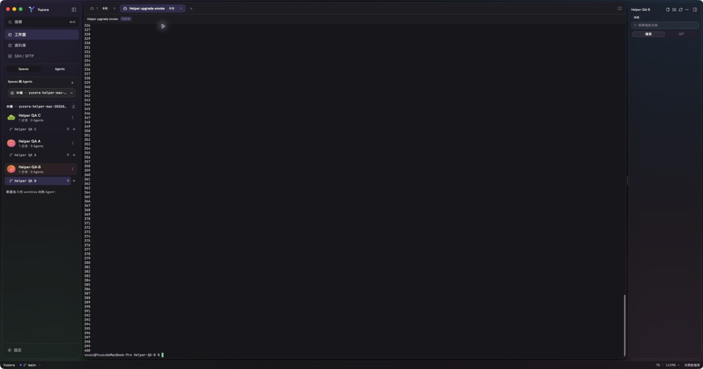
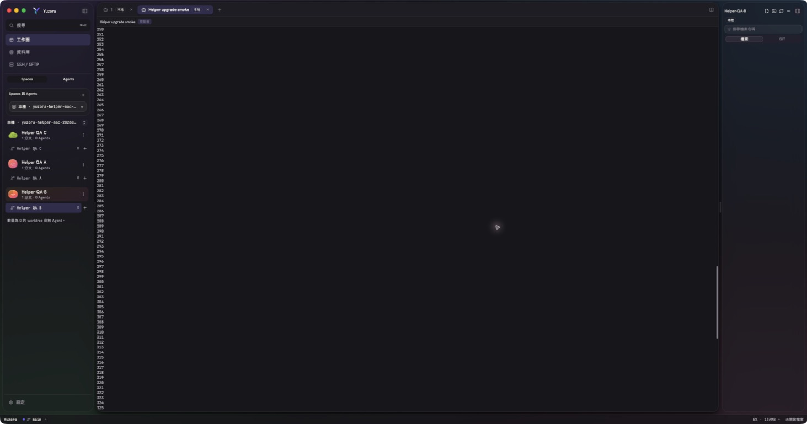
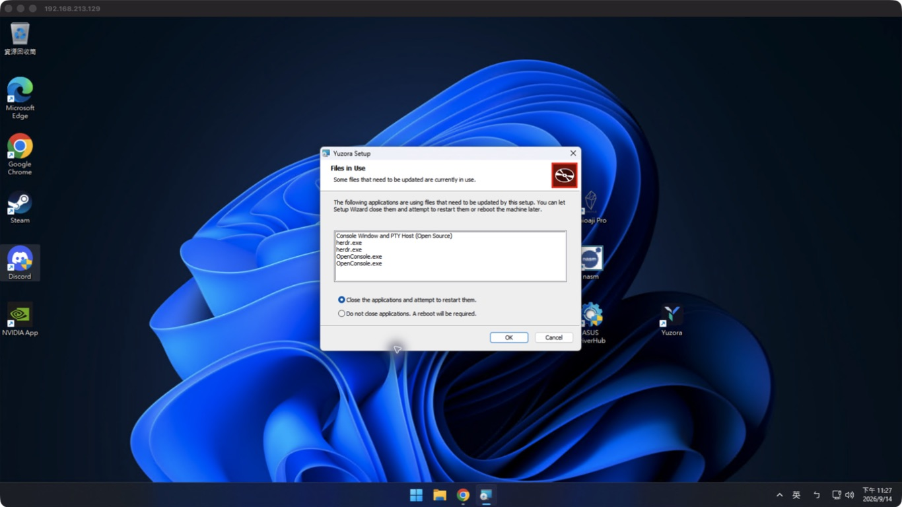
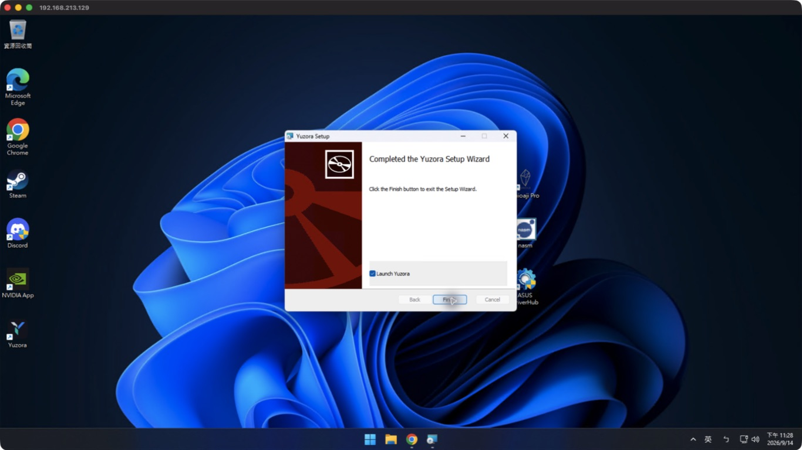
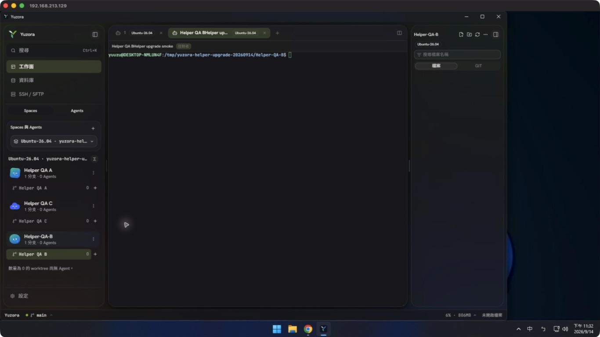
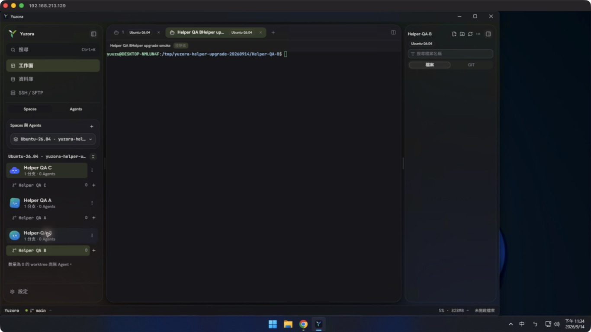
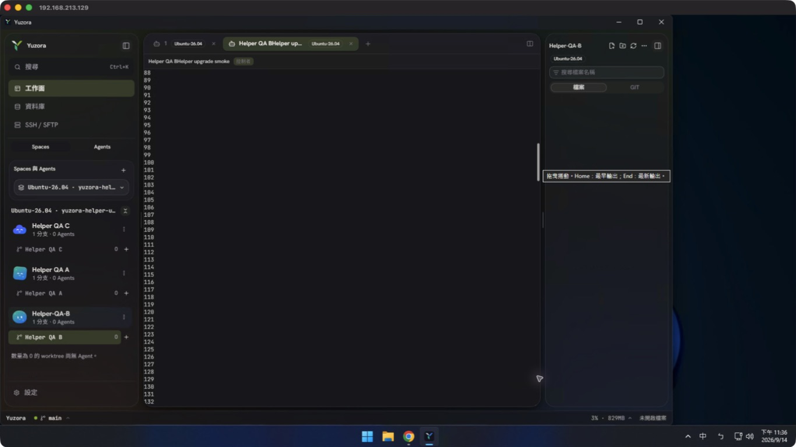
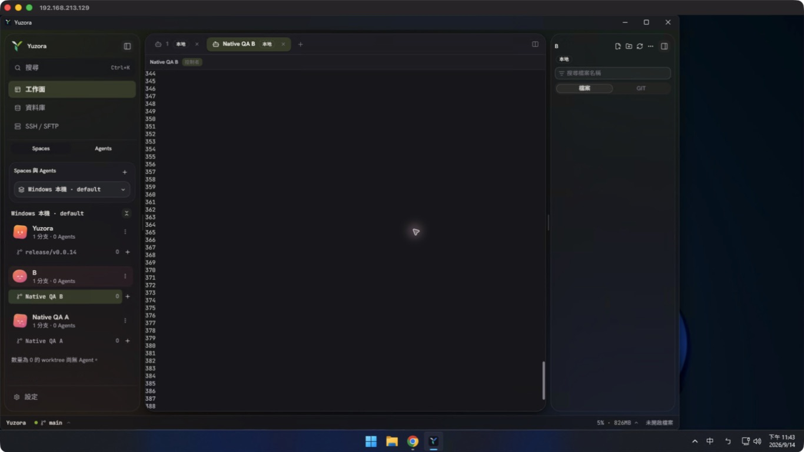
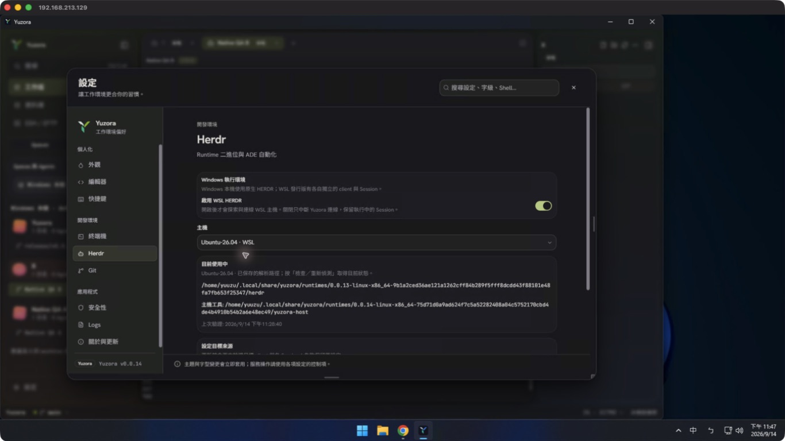

WSL helper 更新修復與候選驗收
候選來源 19bdf4e126c9a17a2f2e295fe7f28bafcae881da · branch release/v0.0.14 · PR #103。本報告僅涵蓋「桌面更新後 WSL／SSH 沿用舊 helper」的修復；不宣稱先前所有跨版本需求均已完成。
根因：App 已是 0.0.14，WSL 卻仍執行 0.0.13 helper。兩者 Host protocol 都是 1，因此 hello 成功不代表支援新命令。舊 helper 漏掉 workspaceMove／workspaceMoveBlock，連帶停用拖曳及上下移。實際 HERDR client／server 均為 0.9.0／protocol 22，官方排序能力存在。
修復內容
| 位置 | 修復與保全方式 |
|---|
| src/state/hostStore.ts | 首次連線比較安裝包 artifact identity；先驗證既有 HERDR client 與全部 running Sessions，再部署新版 helper 至 immutable 目錄。保存獨立 helperArtifactIdentity，保留 HERDR binary 路徑及 default／global／custom 來源政策。更新失敗保留或重連舊 helper，四秒 health poll 不重複部署；關閉 WSL／disconnect／來源換代時丟棄晚回應。 |
| src/workbench/HerdrBridge.tsx | helper generation 改變後，對每個 running named Session 重新 bootstrap 能力與 snapshot，而非只 refresh snapshot。釋放舊事件訂閱。 |
| src/state/herdrStore.ts | bootstrap in-flight key 綁定 Session 與 helper owner generation；新 generation 不等待或接受舊能力回應，防止 ready 狀態保留過期排序 gate。 |
| src/app/workbench/HerdrSettingsSection.tsx | 主機設定顯示自動 helper 更新錯誤，保留既有明確套用入口。 |
自動更新僅更新 helper；HERDR client 的版本切換仍使用現有設定與相容檢查。保留舊 runtime 目錄，不清除仍由現有 client／server 使用的檔案，不停止使用者 HERDR／Agent。
自動化驗證
| 項目 | 結果 | 證據 |
|---|
| 先重現 upgrade regression | PASS（負向證據） | 修復前新增 7 個 cases 失敗，原 20 cases 通過；未曾呼叫 helper prepare。 |
| hostStore upgrade／rollback／v1 migration | PASS | 29 tests。涵蓋 managed/global/custom、同版本不同 artifact、部署失敗、被迫斷開後回復、取消部署、保存失敗與重載獨立 helper identity。 |
| generation／全部 Session 能力刷新 | PASS | store 及 Bridge regression：新 generation 先完成後，舊回應不得覆蓋；兩個 running Session 各重新取得能力。 |
| 完整前端測試 | PASS | CI 229 files／2788 tests 全數通過；本機先跑 2786 tests，追加 2 個 cases 後 hostStore 的 29 tests 全數通過。 |
| typecheck／production build | PASS | bun run typecheck、bun run build。 |
| lint | PASS（既有 warnings） | 0 errors／52 warnings；不修改無關警告。 |
| Rust host_bootstrap tests | PASS | 6 tests；此次 Rust 產品原始碼未變更。 |
| 四平台 Unix payload | PASS | bun run runtime:verify；相同來源 CI host artifacts 四平台 fmt/clippy/tests/官方 runtime 契約通過。 |
原生與安裝矩陣
| 平台 | 版本 | 結果／證據 |
|---|
| macOS Apple Silicon | 26.6.2 (25G83)；Yuzora 0.0.14 candidate；HERDR 0.9.0／22 | PASS：packaged App 啟動、原生上下移、drag、Terminal 輸入 seq 1 400、wheel、可見 scrollbar。snapshot 順序 A,B,C → A,C,B → A,B,C → C,A,B。DMG 完成，codesign --verify --deep --strict 通過。 |
| Windows 原生 | Windows build 26200.9445 | PASS：實際 MSI 升級（exit 0），不關閉 HERDR／不重新開機。原生上下移、drag、PowerShell 輸入 1..400、wheel；權威順序與 scroll offset 已核對。 |
| Windows＋WSL2 Ubuntu 26.04 | HERDR client/server 0.9.0／22 | PASS：重新開啟 App 自動從 helper 0.0.13 遷移至 0.0.14；保留原 HERDR client 路徑，兩項排序能力為 true。原生下移、上移、drag 與權威 snapshot 順序一致；Terminal 輸入、wheel、thumb drag、同 Session 工作延續通過。 |
| SSH 自動 helper 更新 | existing host provider | NOT RUN（原生）：hostStore 來源政策、update、rollback 回歸通過；未以真實 SSH 主機執行安裝遷移。 |
| Signed updater OTA | 候選包停用 updater | NOT RUN：本次候選 installer 不提供正式 OTA；正式 release 維持原簽章與發布門檻。 |
macOS 原生畫面
專用測試 Session；由 native input 產生 400 行。拖曳排序後 sidebar 為 C,A,B；wheel 後 scrollbar 由 326 改為 250。


候選產物與 CI
CI 34855693524 使用 PR merge tree 3e62279f3bb933341b5b056d3ad917b5649939bb，與修復提交 tree 完全相同。CI 最終全部 SUCCESS（第三次 attempt）；初次 macOS HERDR download、第二次 Windows NSIS download 均曾收到 HTTP 504，僅重跑失敗 jobs。macOS／Windows artifacts 與 Windows installer 解包逐檔 hash gate 全數通過。
macOS local DMG SHA-256
20e3ee9bd6124a9d3eebf79adf6f10c412338cfdc9e369c8894e804154d7f58d
Windows MSI SHA-256 (實際安裝)
42be6cf0b3604e2ea5937420537c3d47297f9c0f992d2fddbaae102ce6d0a54a
Windows NSIS SHA-256 (已打包及解包驗證，未另跑 UI 安裝)
0f626b063d5b8d1927f5301d57322c6725a4335cc3995b5a9b8ce166cc8307e2
Installed Windows App SHA-256
086bd36550cf055bccb7904be86255b3c0a0d31dc9e142e9dde377976ee11f9f
Deployed WSL helper SHA-256
f82c36e8326a7a7fa647f8753a73717f72ffdd5a74a528478f2d57daecd453cf
Windows 遠端桌面輸入長命令曾漏字，另一次 MSI 使用 forward slash path 被拒絕；改用已核對的原生 backslash 路徑後安裝精靈正常啟動。這兩次尚未進行產品 mutation，不能記為安裝成功。實際成功安裝使用原生 MSI wizard／UAC／Files in Use 對話框；保留所有執行中程式，安裝 exit code 0。OS 的 MsiSystemRebootPending 在安裝前即為 1，沒有在本次測試執行重啟。


Windows／WSL 原生排序與捲動證據
WSL 下移 A,B,C → A,C,B；上移 → A,B,C；真實滑鼠 drag → C,A,B。原生 Windows 保留使用者 workspace 順序，只交換兩個專用測試 workspace。未注入 DOM／pointer events，也未透過 CLI 執行這些排序 mutation。




WSL w2:p2 range 357：wheel offset 13、thumb drag offset 269。Windows w4:p2 range 357：wheel offset 13。皆由實際 runtime snapshot 驗證，未把 RDP 畫面傳輸時間当作 App latency；本次未重新量測 p50/p95 或宣稱新的效能改善。
Session 延續驗收
專用 WSL Session yuzora-helper-upgrade-20260914，server PID 68267、w1:p1 shell PID 68312、連續 tick 工作 PID 69369。PASS：安裝前 9,096 ticks，安裝並重新開啟 App 後 13,862 ticks，最終同一工作依 fixture 設定自然完成 14,400 ticks；整段序號無缺號、worker PID 一致。server PID／啟動時間／socket／原 pane 與 terminal IDs 一致。Windows 原 HERDR PID 25588 與其啟動時間也一致；未中斷使用者既有工作。
機器可讀證據：acceptance.json、baseline.json、MSI 摘要。完整本機記錄位於 output/helper-update-e2e（未提交終端或私人資料）。
設定保存與清理
原生設定頁確認 HERDR client 仍指向原 0.0.13 runtime 目錄，helper 已保存為 0.0.14 artifact 目錄，上次驗證時間為安裝後。驗收完成後只停止本次建立的三個 named test Sessions、關閉 Windows default 中兩個專用測試 workspace；保留使用者原有 default Sessions／Agent，並保留回復用安裝目錄與測試證據。

後續回歸
- 使用上一候選版的實際 v1/v2 host config，記錄 helper hash、runtime client 路徑、named Session/pane/terminal ID 與持續工作 PID。
- 安裝新 candidate，啟動 App；不手動套用主機設定，等待自動 migration，核對 artifact identity 與能力。
- 在 Windows App 原生 UI 對測試 root/group 執行上下移與 drag；每一步以 HERDR snapshot 的 workspace_ids 確認順序。
- 驗證更新不重啟 HERDR；同一工作 PID 和連續 tick 保持，scroll/input 可用；斷線再連線不重新部署相同 helper。
- 新 helper manifest 或 provider capability contract 變更時，以上測試納入 release candidate 驗收；不能以本輪 PASS 推論未來版本。
本次產品修復已提交並推送，Windows 目標機已安裝並通過上述原生驗收。正式 release 尚未發布；signed updater OTA、SSH 真實主機升級、完整歷史版本與 native group/worktree 排序本輪 NOT RUN，不能外推為全面驗收通過。